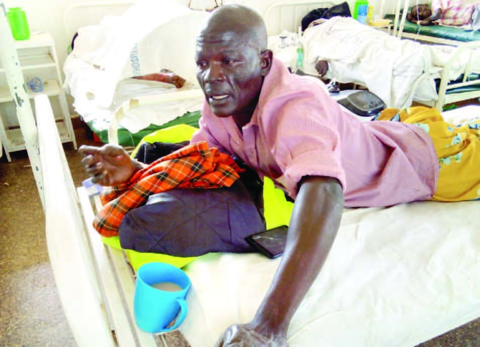

Village loses 13 in tanker tragedy
Disaster at night:
All the victims who were siphoning fuel
from accident
truck at Malanga
trading
centre on Kisumu-Busia highway on Saturday night knew one another
PAGE
5

James Omollo, who was injured in the Malanga fuel tanker tragedy, speaks from his
hospital
bed
in Yala sub-county hospital LEFT Villagers mingle around the charred remains of a lorry
involved
in the fire accident. PD/VIOLA KOSOME